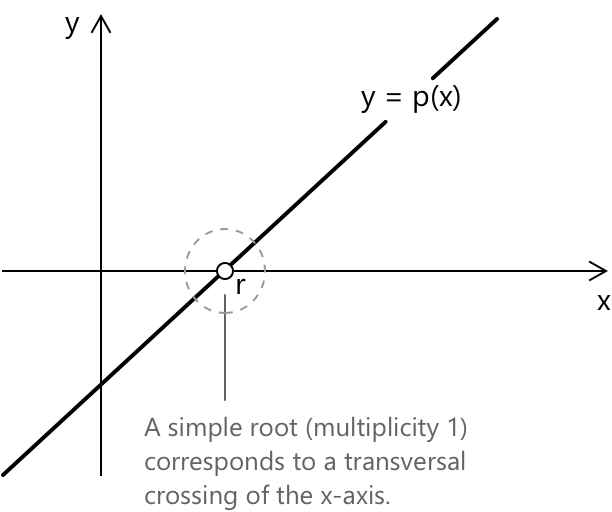
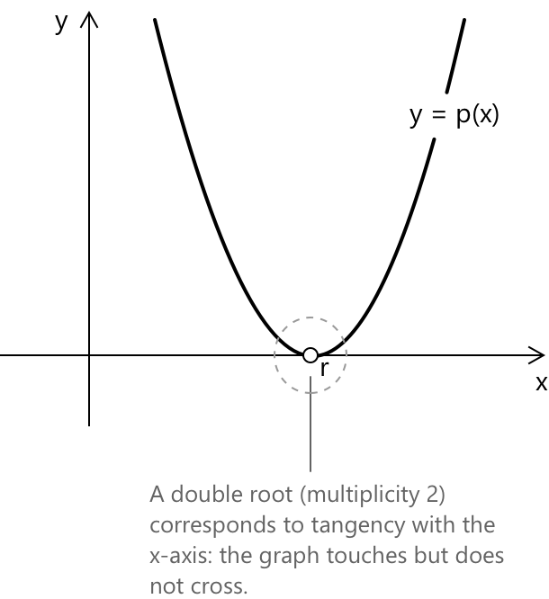
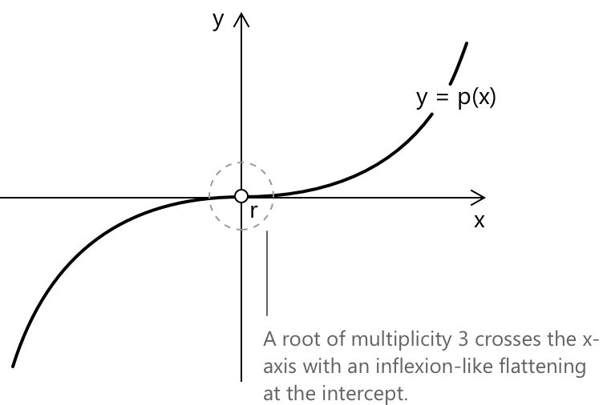

Корені полінома
Означення
Нехай \( p(x) \) — поліном з коефіцієнтами в полі \( \mathbb{F} \), зазвичай \( \mathbb{R} \) або \( \mathbb{C} \). Коренем або нулем \( p \) називається будь-який елемент \( r \in \mathbb{F} \), такий що
\[ p(r) = 0 \]
Точніше, якщо ми маємо поліном:
\[ p(x) = a_n x^n + a_{n-1} x^{n-1} + \cdots + a_1 x + a_0 \]
де \( a_n \neq 0 \), то \( r \) є коренем. Підстановка \( x = r \) дає лінійну комбінацію коефіцієнтів, що дорівнює нулю. Терміни «корінь» та «нуль» використовуються як взаємозамінні.
Для полінома \( p : \mathbb{R} \to \mathbb{R} \) дійсні корені є точками перетину його графіка з віссю \( x \). Кратність кореня впливає на графік локально. У простого кореня (кратність один) графік чисто перетинає вісь \( x \) і не є дотичним.

Для кореня з парною кратністю графік торкається осі \( x \), але не перетинає її. Оскільки \( (x – r)^m \geq 0 \) для парного \( m \), поліном не змінює знак у точці \( r \), і графік повертається на той самий бік осі.

Для коренів з непарною кратністю, більшою за один (\( m \geq 3 \)), графік перетинає вісь, але виглядає більш плоским у точці перетину; це сплощення стає більш помітним зі збільшенням кратності, що надає вигляду, схожого на точку перегину.

Ці властивості випливають з локального розкладу:
\[ p(x) = (x – r)^m q(x) \]
де \( q(r) \neq 0 \). Оскільки \( q \) є неперервною та ненульовою в точці \( r \), вона зберігає постійний знак у деякому околі \( r \), тому знак \( p(x) \) поблизу \( r \) повністю визначається множником \( (x - r)^m \).
- Коли \( m \) непарне, \( (x - r)^m \) змінює знак при проходженні \( x \) через \( r \), тому \( p \) перетинає вісь.
- Коли \( m \) парне, \( (x - r)^m \geq 0 \) по обидва боки від \( r \), тому \( p \) не змінює знак і графік повертається на той самий бік осі.
Ненульовий поліном степеня \( n \) над будь-яким полем має не більше \( n \) коренів, якщо рахувати з кратністю. Це випливає з того факту, що поліном степеня \( n \) не може бути поділеним на більше ніж \( n \) лінійних множників.
Зокрема, два різні поліноми степеня не більше \( n \) не можуть збігатися у більше ніж \( n \) точках. Якщо \( p(x) – q(x) \) має степінь не більше \( n \) і зникає в \( n + 1 \) точках, то \( p \equiv q \).
Теорема про раціональні корені
Нехай задано поліном із цілими коефіцієнтами:
\[ p(x) = a_n x^n + \cdots + a_0 \in \mathbb{Z}[x] \]
Теорема про раціональні корені визначає скінченну множину кандидатів на раціональні корені. Якщо \( r = s/q \) у нескороченому вигляді, де \( s, q \in \mathbb{Z} \) та \( q > 0 \), є коренем \( p(x) \), то необхідно, щоб \( s \mid a_0 \) та \( q \mid a_n \).
Це зводить пошук раціональних коренів до скінченної сукупності дробів, кожен з яких можна перевірити шляхом прямої підстановки або схеми Горнера (синтетичного ділення).
Основна теорема алгебри
У полі \( \mathbb{C} \) комплексних чисел кожен непостійний поліном має принаймні один корінь. Застосовуючи теорему про розклад на множники неодноразово, будь-який поліном степеня \( n \geq 1 \) повністю розкладається на лінійні множники над \( \mathbb{C} \):
\[ p(x) = a_n (x - r_1)^{m_1}(x - r_2)^{m_2} \cdots (x – r_k)^{m_k} \]
де \( m_1 + m_2 + \cdots + m_k = n \). Рахуючи корені з урахуванням їхньої кратності, поліном степеня \( n \) має рівно \( n \) коренів у \( \mathbb{C} \). Ця властивість характеризує \( \mathbb{C} \) як алгебраїчно замкнене поле.
Над \( \mathbb{R} \) комплексні корені дійсного полінома виникають спряженими парами. Якщо \( r = \alpha + \beta i \) при \( \beta \neq 0 \) є коренем \( p \in \mathbb{R}[x] \), то \( \bar{r} = \alpha – \beta i \) також є коренем, і два множники об'єднуються в незвідний квадратний тричлен над \( \mathbb{R} \):
\[ (x – r)(x – \bar{r}) = x^2 - 2\alpha x + (\alpha^2 + \beta^2) \]
Відповідно, кожен дійсний поліном непарного степеня має принаймні один дійсний корінь. Розкладена форма також встановлює прямий зв'язок між коренями та коефіцієнтами. Розкриваючи дужки, маємо:
\[ a_n(x – r_1)(x – r_2)\cdots(x - r_n) \]
Порівнюючи з:
\[ a_n x^n + a_{n-1}x^{n-1} + \cdots + a_0 \]
це дає формули Вієта, які виражають кожен коефіцієнт як елементарний симетричний поліном від коренів. Зокрема:
\[ r_1 + r_2 + \cdots + r_n = \frac{-a_{n-1}}{a_n} \] \[ r_1 r_2 \cdots r_n = \frac{(-1)^n a_0}{a_n} \]
Квадратний випадок детально розглянуто на сторінці про трикутники (квадратні тричлени).
Знаходження коренів: огляд методів
Для поліномів степеня 1 та 2 точні формули є елементарними. Лінійний поліном \( ax + b \) має єдиний корінь \( x = -b/a \). Для квадратного полінома \( ax^2 + bx + c \) корені визначаються за допомогою формули квадратного рівняння:
\[ x = \frac{-b \pm \sqrt{b^2 - 4ac}}{2a} \]
Величина \( \Delta = b^2 – 4ac \) є дискримінантом.
- Якщо \( \Delta > 0 \), поліном має два різні дійсні корені.
- Якщо \( \Delta = 0 \), він має один дійсний корінь кратності 2.
- Якщо \( \Delta < 0 \), він має два комплексних спряжених корені.
Розв'язання у закритій формі також існують для степеня 3 (формула Кардано) та степеня 4 (метод Феррарі), хоча вони значно складніші. Для вищих степенів проблема потребує більш просунутих методів.
Корені полінома — це саме розв'язання відповідного поліноміального рівняння \( p(x) = 0 \), і викладені вище методи застосовуються безпосередньо до обох випадків.
Важливе застосування коренів полінома зустрічається при розкладі на прості дроби, де раціональна функція \( P(x)/Q(x) \) виражається як сума простіших доданків. Структура цих доданків визначається коренями та кратністю знаменника \( Q(x) \). Прості корені \( Q(x) \) відповідають різним лінійним множникам, тоді як кратні корені призводять до послідовностей доданків зі зростаючим порядком.
Вибрана література
-
University of Maryland,m C. D. Levermore. Formulas for Roots of Polynomials
-
Stanford University, S. Boyd. Rational Functions and Partial Fraction Expansion
-
Northeastern University. Polynomial Functions, Factorization in \(F[x]\)